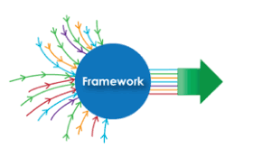
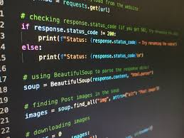
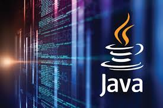

présentation de l'option Slam
| NOTION | DEFINITION | IMAGE |
| framework | Un framework fonctionne avec un ou plusieurs langages de programmation (JavaScript, Python, PHP…). Il permet au développeur de structurer le code source d'un logiciel. Parmi les frameworks utilisés : React JS, Symfony, Angular, Django, Ruby on Rails, jQuery… |  |
| python | Python est un langage de programmation interprété, multiparadigme et multiplateformes. Il favorise la programmation impérative structurée, fonctionnelle et orientée objet |  |
| HTML | Le HyperText Markup Language, généralement abrégé HTML ou, dans sa dernière version, HTML5, est le langage de balisage conçu pour représenter les pages web. | |
| JavaScript | Java est une technique informatique développée initialement par Sun Microsystems puis acquise par Oracle à la suite du rachat de l'entreprise. Défini à l'origine comme un langage de programmation, Java a évolué pour devenir un ensemble cohérent d'éléments techniques et non techniques |  |